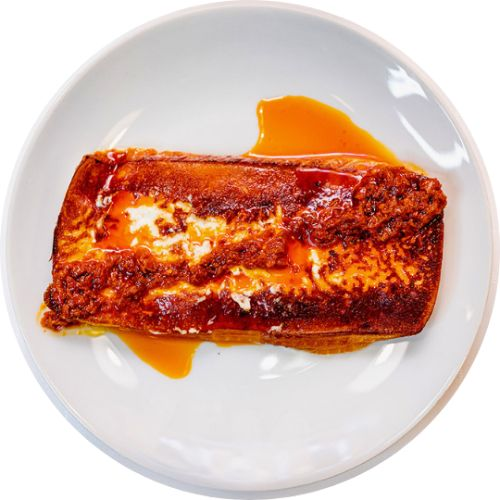
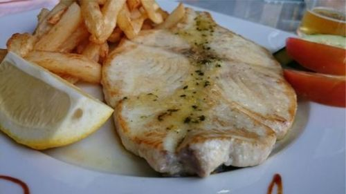
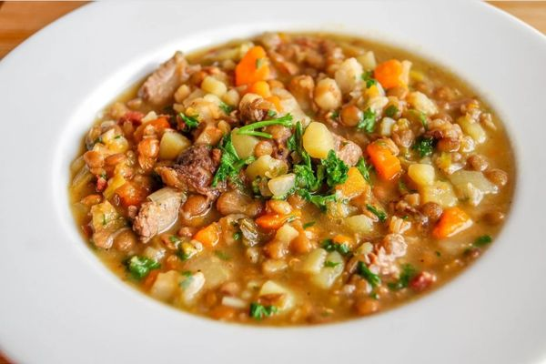
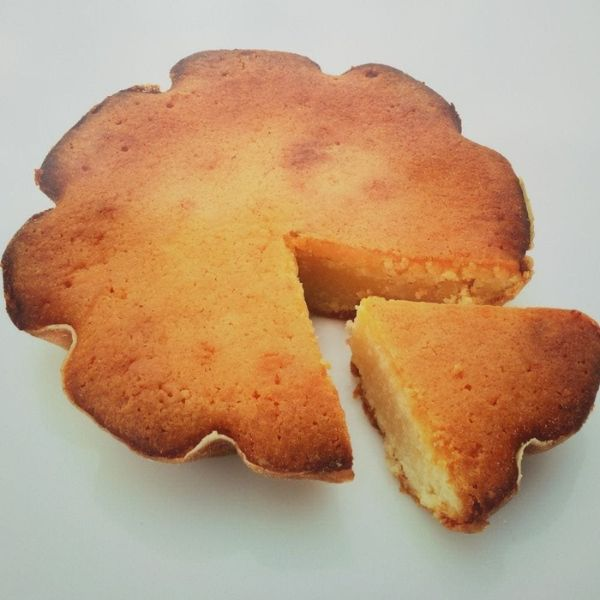
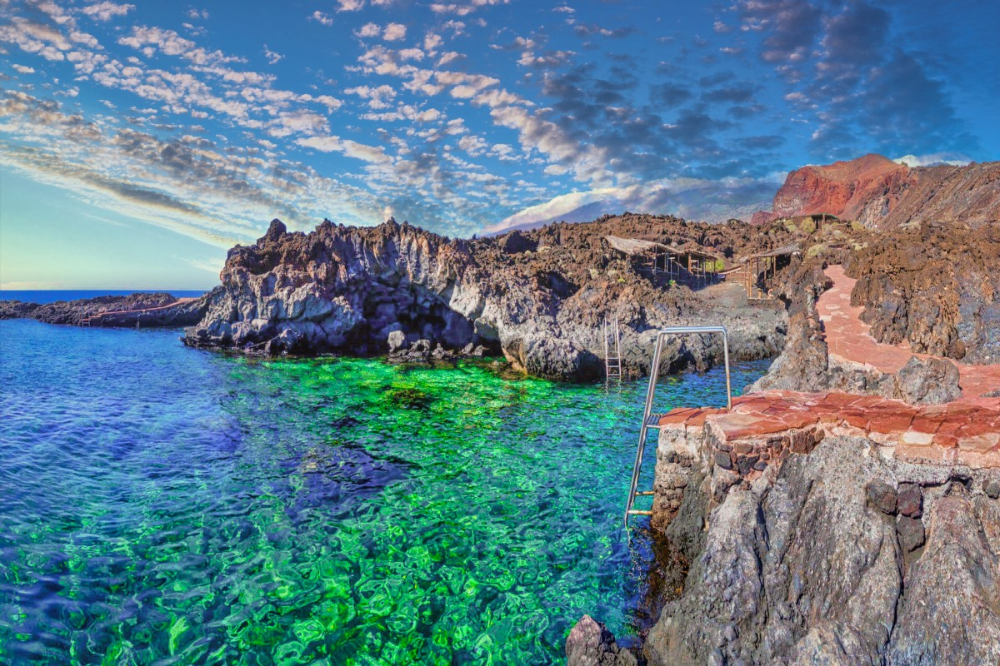
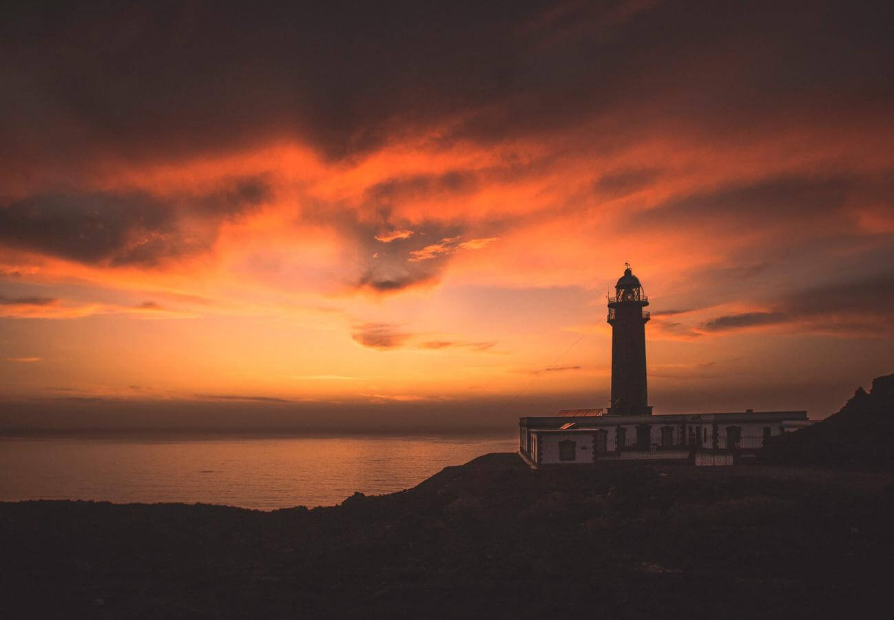
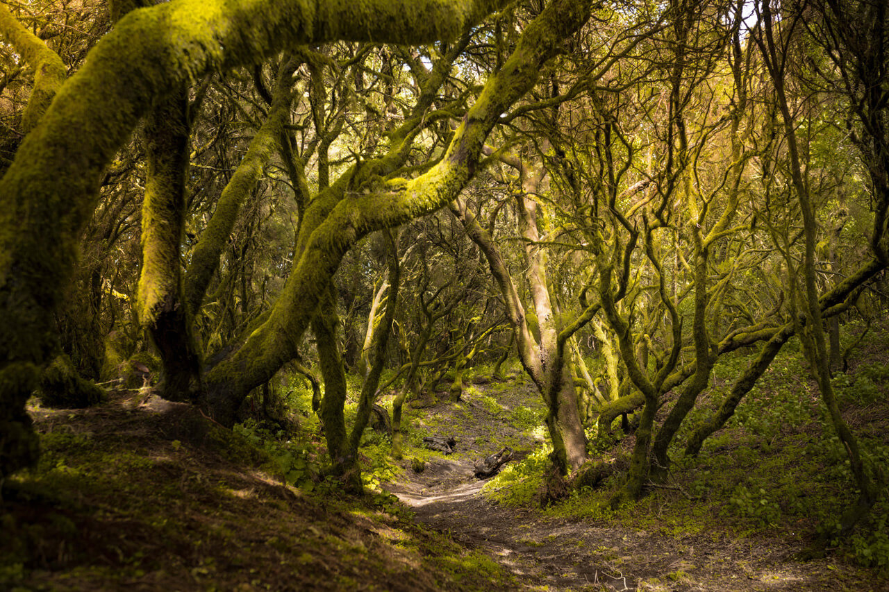
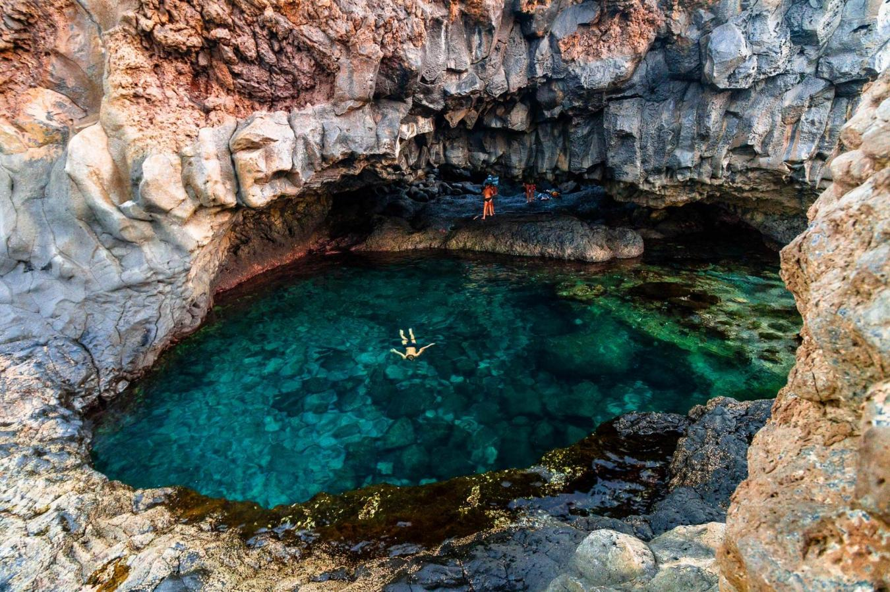

La isla del meridiano

Queso herreño a la plancha |
El queso herreño es la principal comida típica de la isla de el Hierro y el alimento más rico y sabroso por diferencia. Este queso se elabora a partir de leche cruda de cabra herreña principalmente, aunque también contiene leche de oveja y vaca. Entre los más destacados se encuentran el queso fresco (tierno) o el curado. El sabor de ambos es espectacular, y si encima lo acompañas con mojo de las islas, está para chuparse los dedos. |

Pescado peto a la plancha y papas |
Aunque en todas las Canarias el pescado juega una parte fundamental en su gastronomía, los pescados clásicos y más consumidos en los locales herreños son la vieja y el peto. La vieja ya es tradicional en todas las islas, pero el peto es más endémico y diferente. Estos dos pescados son los favoritos en los restaurantes y los preferidos por los consumidores locales. Si te gusta el pescado y algún día vienes al Hierro, no olvides pedirte una vieja o un peto acompañado de unas papitas arrugadas. |

Potaje de jaramagos |
Este potaje o guiso, aunque también es una comida típica de la Gomera y Gran Canaria, aunque suele consumirse frecuentemente en el Hierro, concretamente en las épocas más frías del año. Los ingredientes de este guiso son, además de los jaramagos, verduras, legumbres y carnes de vacuno, cerdo o pollo. Se puede elaborar de varias maneras, pero en la isla herreña se hace de una forma que queda un plato magnífico y suculento. Si eres amante de los caldos, no te olvides de probar el potaje de jaramagos, está muy bueno y te deja la panza totalmente llena. |

Quesadilla herreña |
Este pastelito típico y artesanal de la isla de el Hierro lleva elaborándose desde hace más de un siglo. Está considerada como una de las tartas de queso más arraigadas en la cultura canaria, siendo uno de las recetas más famosas de toda Canarias. Si alguna vez visitas esta isla, probablemente te topes con esta quesadilla, que ya te adelantamos que está riquísima. |
La playa de Tacorón, también conocido como Tecorón es una playa en el suroeste de la isla de El Hierro, en Canarias. Pertenece al municipio de El Pinar y se encuentra a 5 km de este y a 9 km de La Restinga. Se encuentra incluida en el Parque rural de Frontera y en la Reserva Marina del entorno de la Punta de La Restinga-Mar de las Calmas. Es uno de los principales destinos turísticos de sol y playa, de la isla y se trata de una de las 11 mejores playas de Canarias según National Geographic. |

Playa del Tacorón |
Frente al mar y en la parte oeste de la isla de El Hierro, el Faro de Orchilla fue, hasta hace unos años, el punto donde se situaba el Meridiano Cero. Este icónico rincón de la isla menor de las Islas Canarias es un abismo a lo desconocido. Situado en la Punta de la Orchilla y de fácil acceso en coche, es un lugar para visitar: por sus cielos, sus atardeceres anaranjados y por la paz que se respira. |

Faro de Orchilla |
El sendero de La Llanía, uno de los más populares de la isla, parte de Valverde, en el nordeste, para adentrarse en paisajes que resultan casi hechizantes. El Brezal, un bosque húmedo y tupido, conduce a caminos poblados de helechos que llevan a tierras más blandas y desnudas, y a las arenas negras de una de las calderas mejor conservadas de la isla, que precede al grandioso paisaje del Golfo. Son siete kilómetros de ida y vuelta con mucha magia y belleza. |

La Llanía |
El charco Azul, en El Hierro, es una de las zonas de baño más espectaculares y entrañables de la menor de las Islas Canarias. Compendio de las múltiples formas que dejó la lava, este rincón no solo le obsequiará con placenteros baños en sus aguas turquesas, sino que lo hará protegiéndole con un roquete del imponente océano, que deja su impronta con su rompiente de espuma blanca y sonido envolvente. |

El Charco azul |